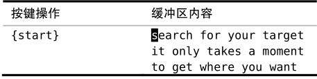
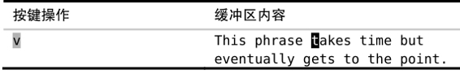

）。
）。技巧50通过查找进行移动
查找命令允许我们用很少几个键就能快速地进行跳转，跳转的距离可以很近，也可以很远。
虽然字符查找命令（f{char、t{char}等）执行起来方便快捷，但是它们具有一定的局限性。这些命令一次只能查找一个字符，并且它们只能在当前行内查找。如果想查找一个以上的字符，或是移动到当前行之外的话，就需要使用查找命令。
假设我们想把光标移到下例中的单词“takes”上：
我们可以通过查找此单词移动到那里，即/takes<CR>。在这个小例子中，此单词只出现过一次，因此这条命令肯定一下就能跳到我们想去的地方。不过，让我们看看是否能用更少的键实现同样的效果：

查找两个字符“ta”会有两个匹配结果，而3个字符“tak”则只有一个唯一的匹配结果。在本例中，查找动作只移动了一小段距离，但是在一个比较大的文档中，采用这种技术，按几个键就可以移动出很远的距离。因此，查找命令是非常经济实惠的移动方法。
如果我们查找两个字符“ta”，第一次会跳到错误的位置，不过接下来可以用n命令重复上次的查找命令，这样就可以跳到下个正确的匹配之处了。另外，如果按n键的次数过多了，我们还可以用N命令再跳回来。现在你应该对技巧4中提到的口诀更加熟悉了，即执行、重复、回退。
在上一技巧中，我们看到fe命令不太管用，因为字母 e 实在是太常见了。查找两个或更多的字符能够规避这一缺点，虽然e在英语中出现的次数比较多，但其中只有一小部分后面会紧跟着字母 x。你也许会感到惊讶，有时候只要查找单词的前几个字母就能跳到该单词上了，并且这一招还屡试不爽。
在上面查找“takes”的例子里，我启用了‘hlsearch’功能，以便高亮匹配项。在查找较短的字符串时，文档中经常有多个匹配项。当‘hlsearch’选项处于启用状态时，将会导致结果不太容易辨识。因此，如果你习惯于使用查找命令进行移动，那么你可能会想关闭此选项（缺省关闭）。然而，在查找时，你可能会想启用‘incsearch’选项，它在这种情形下会非常有用，更多细节请参考技巧81。
用查找动作操作文本
查找命令不仅限于在普通模式下使用，我们也可以在可视模式及操作符待决模式中使用它，用来完成实际的工作。例如，假设我们想删除下句中的“takes time but eventually”：

刚开始，我们按v切换到可视模式。接着我们将选区扩大，这可以通过查找字符串“ge”来完成，它一步就会把光标移到要去的地方。就快好了，不过还有个“差一错误”，即此选区包含了单词get 词首的“g”，但我们并不想删除它。因此，得用h命令往回移一个字符。好了，确定了选区后，我们就可以用d命令删除该选区了。
还有种更快的方法完成同样的工作：
在这里，我们用/ge<CR>查找动作告诉d{motion}命令删除什么。查找命令是一个开动作，也就是说，虽然光标是在单词“gets”开头的“g”上的，但此字符却被排除在删除操作之外（参见:h exclusive）。
如果不用可视模式的话，我们能省掉两次不必要的按键（请参见技巧23）。不过可能你得练习一段时间才能习惯这种用法。学会把d{motion}操作符与查找动作结合在一起使用，这是个很大的进步，你可以好好在朋友和同事们面前炫耀一番了。